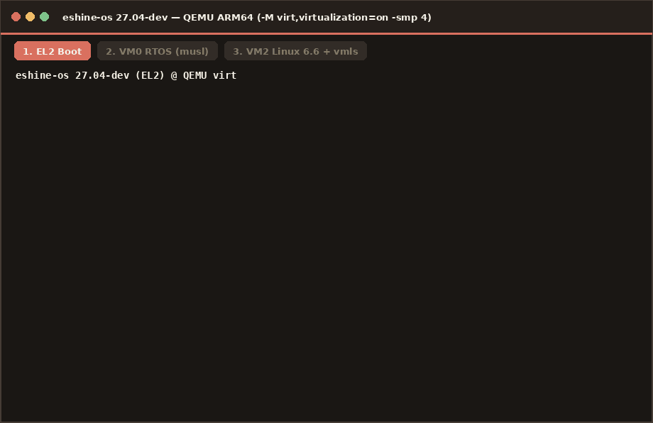
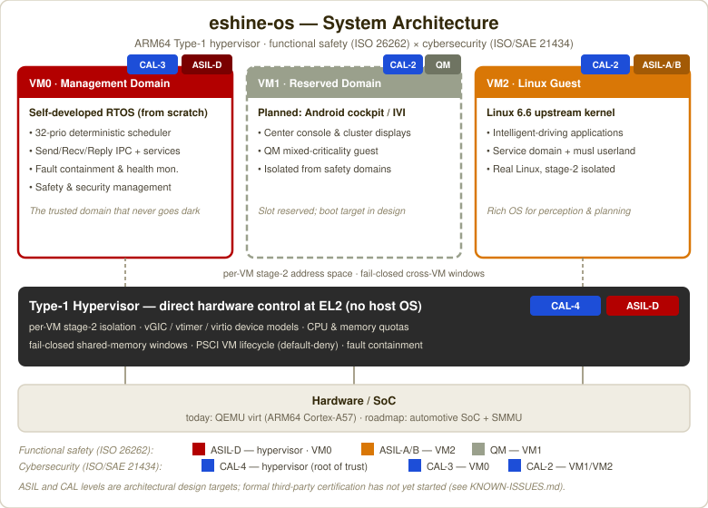

ARM64 EL2 · Apache-2.0 · 主线 27.04-dev
开源 ARM64 Type-1 Hypervisor 与高安全 RTOS 底座
在同一台机器上以硬件 Stage-2 隔离并行运行从零自研 SMP RTOS（VM0）与真实上游 Linux 6.6（VM2），内置默认拒绝（fail-closed）跨 VM 共享控制与 173+ 可重放 QEMU 自动化门禁。
底层之光，守护生命 · The light beneath, guarding life.
~2.4 万行
C 与 AArch64 汇编，依据公开手册从零编写
RTOS + Linux 6.6
同一份静态 musl ELF 在两个世界输出完全一致
173 / 173 CI 全绿
GitHub Actions 三分片 6.7 分钟跑完全套门禁
Apache-2.0
全文件 SPDX 声明，严格分离 GPL 客机工件
60 秒实机演示 & 快速上手
以下画面录自单次连续 QEMU ARM64 会话：EL2 引导 → VM0 自研 RTOS 运行 musl /bin/hello → VM2 Linux 6.6 同机运行同一 ELF 可执行文件。

QEMU virt（4× Cortex-A57）真实串口输出：VM0 与 VM2 在 EL2 Stage-2 隔离下同时处于 VM_RUNNING 状态。
方式 A — 固定 Docker 镜像（免配交叉工具链）
git clone https://gitee.com/eshine-os/eshine-os.git
cd eshine-os
# Ubuntu 24.04 + cross-gcc + QEMU 8.2.2
scripts/container.sh build
scripts/container.sh run支持 Podman（
ESHINE_CONTAINER_ENGINE=podman）；需在容器内拉取 Linux 客机工件时可加 ESHINE_CONTAINER_NETWORK=bridge。
方式 B — 本地 Linux（ARM64 交叉编译器 + QEMU）
git clone https://gitee.com/eshine-os/eshine-os.git
cd eshine-os
# 编译并跑冒烟门禁（1..18），再拉起 QEMU
make && make verify-fast
make run执行
make verify 可跑完整绿套件，离线环境可通过 scripts/bootstrap.sh --adopt 复用既有工件。系统架构
一芯三域混合临界度设计 — 沿功能安全（ISO 26262）与信息安全（ISO/SAE 21434）双轴划分隔离边界。

| 层级 / 域 | 设计目标等级 | 当前状态 | 已实现与规划能力 |
|---|---|---|---|
| Type-1 Hypervisor (EL2) | ASIL-D / CAL-4 | 已实现 | 无宿主 OS 直驱硬件；per-VM Stage-2 地址隔离、vGICv3、vtimer、virtio-blk/net、DTB 注入、PSCI 生命周期状态机、CPU/内存配额、fail-closed 跨 VM 共享窗。 |
| VM0 · 管理域 RTOS | ASIL-D / CAL-3 | 已实现 | 从零编写双核 SMP 实时内核：32 级抢占式位图调度、进程 Stage-1 MMU 与 ASID、三段同步消息 IPC、futex/signal、ramfs/procfs、HAM 健康监控与用户态 musl ELF 加载器。 |
| VM1 · 预留座舱域 | QM / CAL-2 | 槽位预留 | 当前为裸机故障隔离对照客机，槽位预留给后续 Android 仪表/中控座舱域。 |
| VM2 · Linux 域 | ASIL-A/B / CAL-2 | 已实现 | 真实上游 Linux 6.6 SMP 内核 + busybox initramfs + musl 用户态，承载智驾感知、规划与富生态服务。 |
诚实边界声明： 表中 ASIL（ISO 26262）与 CAL（ISO/SAE 21434）级别为架构设计目标，尚未启动正式第三方功能安全认证。当前全部自动化判据运行在 QEMU
virt（ARM64）平台；已知缺陷、QEMU 10.2.1 兼容问题及当前安全边界详见 KNOWN-ISSUES.md。
AI 结对工程化与证据纪律
由 Julian Chu 发起并与 AI 模型（Claude Code、GLM-5.3、DeepSeek V4.1 等）协同开发 — AI 负责高速产出，自动化 QEMU 门禁决定一切真伪。
173/173 独立门禁
普通门各自冷启独立 QEMU，状态家族使用自包含场景 fixture。GitHub Actions 3 分片 403 秒跑完 173 道绿门（4 道隔离门公开挂账跟踪）。
查看 CI.md →研发路线图
严格遵循“缺陷预算优先于功能扩张”原则：先夯实底层硬件不变量与安全边界，再上真机与富生态。
-
近期优先开启 EL2 Stage-1 MMU、安全边界修真与隔离门清零 启用 EL2 MMU 与严格对齐（解决 QEMU 10.2+ 兼容），收紧 RTOS
access_ok/ W^X / 跨核tlbi vmalle1is，统一 64 位自旋锁位宽，清零剩余 4 道隔离门至 177/177。 -
进行中功能安全架构（ISO 26262） 在安静窗口双连绿闭环双核 SMP 历史残留问题，增强故障遏制与需求–门禁可追溯链条。
-
进行中信息安全边界加固（ISO/SAE 21434） 对 EL2 虚拟化边界与 RTOS 系统调用面引入模糊测试（fuzzing）与跨 VM 越权负向门禁。
-
规划中低成本 ARM64 开发板真机点亮（Board HAL → SoC） 抽离 QEMU
virt地址常量为板级 HAL，优先在树莓派 5 / RK3588 上点亮双域真机运行，继而对接车规 SoC（SMMU / GIC-ITS）。 -
规划中亚拍高精实时与 VM1 座舱域 实现单发高精度定时器（oneshot hrtimer）与真机微秒级唤醒延迟实测，并在预留 VM1 槽位点亮 Android 座舱域。
版本发布与镜像仓库
采用半年一次 YY.MM 稳定版节奏（每年 4 月 / 10 月），辅以每周 -Nw 开发周标签。
Git 仓库地址
| 角色 | 仓库地址 |
|---|---|
| Gitee（国内镜像） | gitee.com/eshine-os/eshine-os.git |
| GitHub（主仓库） | github.com/eshine-os/eshine-os.git |